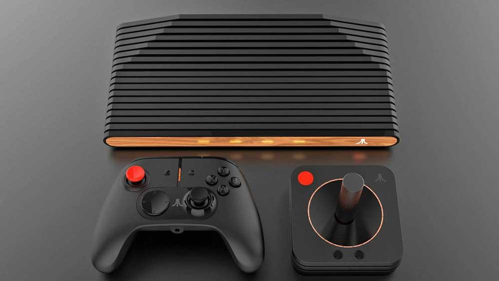

|  |
PROCESADOR CPU:AMD Ryzen Embedded R1606G.MEMORIA 32 GB eMMC + USB / almacenamiento en la nube (con suscripción) RAM 4 u 8 GB.PUERTOS Y CONECTIVIDAD: HDMI 2.0, puertos USB 4 x USB 3.1.Dimensiones 38cm x 31cm x 10cm.Conectividad802.11 ac (doble banda), Bluetooth 4.0, Gigabit Ethernet. |